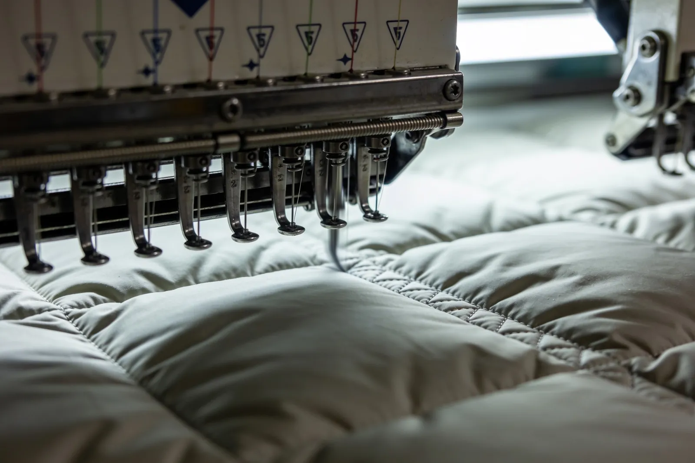

Home/Partner Factory Line
Line 01 · Partner Factory Line
Outerwear and apparel, at production scale.
Padded jackets and outerwear are the strength of this line, alongside woven, soft woven and knit garments. Production runs in a partner factory network in Bangladesh, with Revival Global Ltd as exporter.
- Minimum order
- Ask usper style, by fabric
- Lead time
- Ask usafter sample approval
- Made in
- A partner factory network in Bangladesh
- Good for
- Brands moving from samples to production runs of outerwear and apparel.
Minimums and lead times depend on style, fabric and quantity. Ask us, and we confirm them in your quote.



What the line makes
Strongest in outerwear.
Padded and puffer jackets, coats and other outerwear, with woven, soft woven and knit garments alongside.
Products
Fabric types
- Woven
- Shirting, twill, canvas, technical outer shells.
- Soft woven
- Viscose, rayon and light blends that drape.
- Knit
- Jersey, fleece and rib for tops and sweatshirts.
Who runs it
The line runs with our partner Greenwear and its factory network in Bangladesh. Revival Global Ltd manages production and exports; MEGURIWA runs this desk.
Quality
How we check.
We describe quality by how it is checked, so you know what to expect.


Start small
Start with a sample.
Send us your idea. We tell you which line fits, what the sample costs and how long it takes — before you commit to a production order.